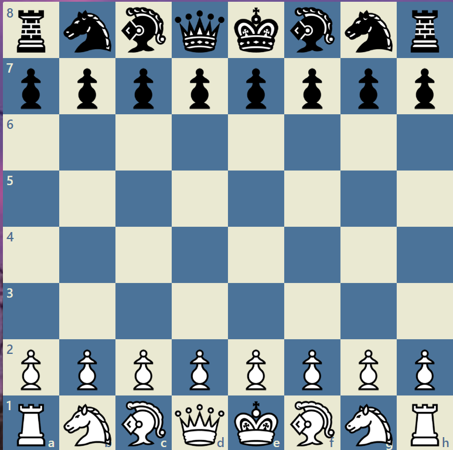
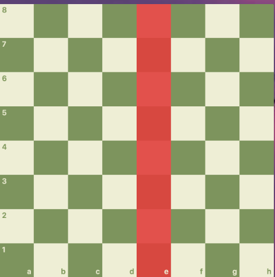
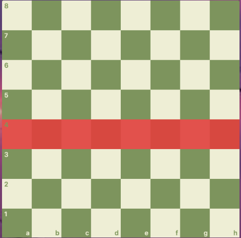
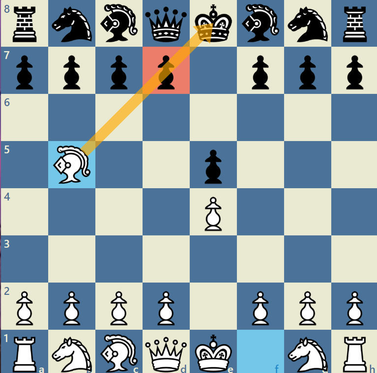
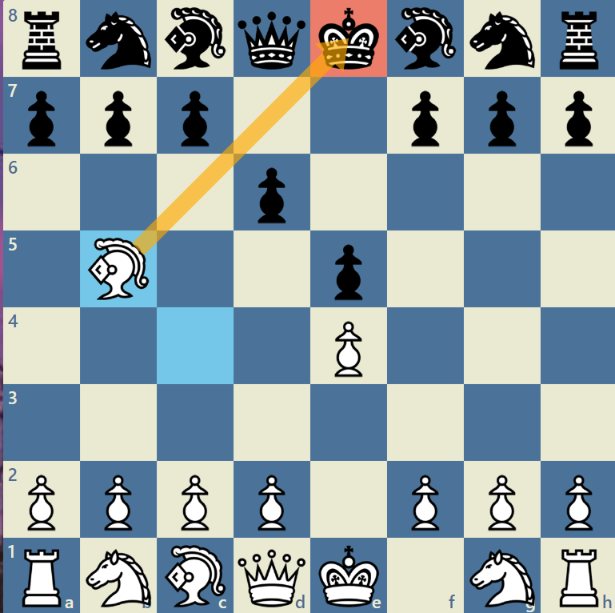
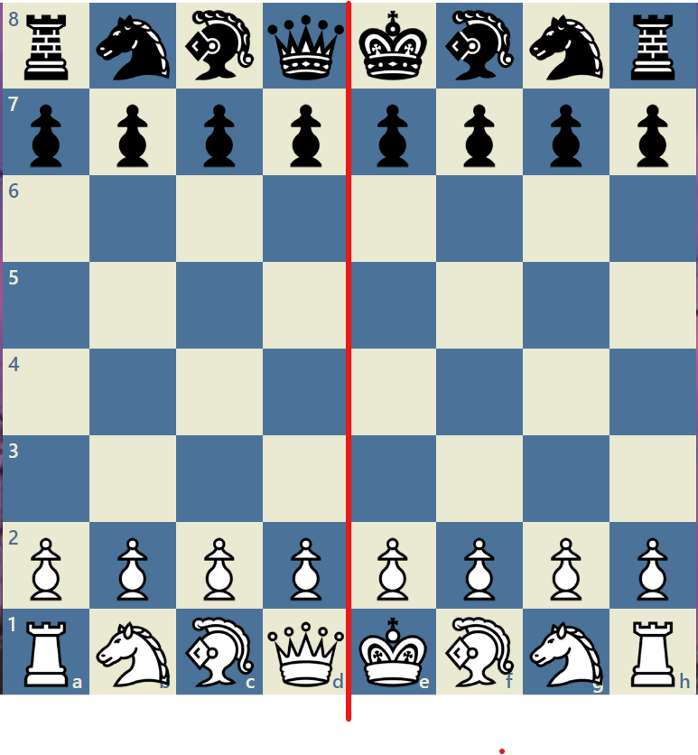
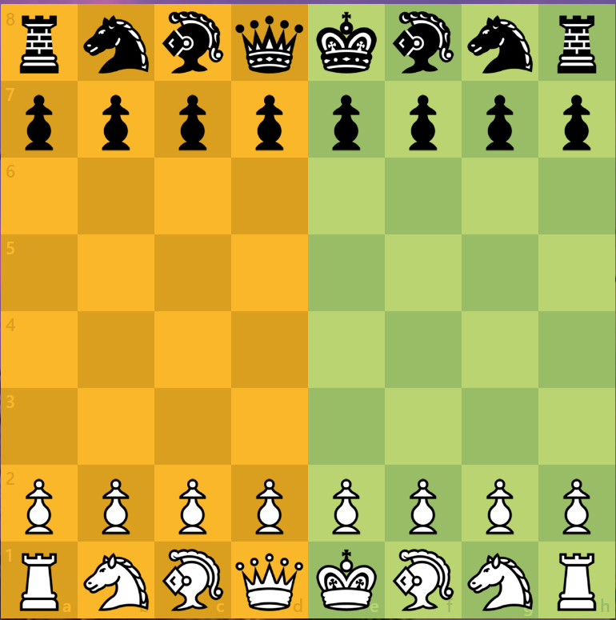
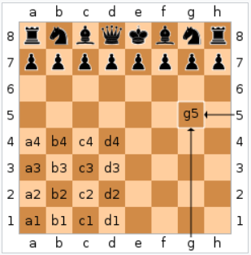

체스하쉴?
이페이지를 모두 읽고 다음으로 이동하세요
- home
- 체스의 기물
- 스테일 메이트
- 앙파상
- 캐슬링
- 오프닝
- 체크메이트
•체스란
2인용의 보드 게임이다.
체크 무늬로 된 체스판 위에서 특별한 모양으로 만들어진 기물들을 규칙에 따라 적절히 이동시켜 전열을 정비
상대방의 킹(king)을 공격(체크)하여 내 기물의 공격에서 벗어날 수 없는 체크메이트 상황으로 몰아넣는 편이 승리하는 턴제 추상전략게임이다.
특히 북미와 유럽, 인도 그리고 중국에서 인기가 있다.
체스를 즐기는 인구만 6억이라고 잡기도 하지만 집계 방식마다 천차만별이어서 정확한 체스 인구는 알 수가 없다.
FIDE에서는 정기적으로 체스대회에 참여하는 기준으로 전 세계적으로 2천만에서 3천만 정도로 잡기도 했다.
어쨌든 저변이 전 세계적이어서 매년 열리는 대회 수와 상금의 규모는 상당하다.
가장 유명하고 큰 체스 사이트인 체스닷컴은 하루 동접자 1천만 명을 달성하기도 했다.
가입된 멤버 수는 1억 명을 넘어섰다.
매달 한 번이라도 접속하는 사람들만 헤아린 숫자이므로 한 달 이상 접속을 안 한 사람, 계정만 만들어놓고 아무런 활동도 하지 않은 사람, 자신의 계정을 닫은 사람들도 모두 포함한다면 수는 더 많아진다.
•체스보드

체스 판(보드)는 8X8 이다
•행, 열

열

행
•핀

핀을 걸어서 폰을 움직이지 못하게 한다
왜 움직이지 못하냐면 움직이면 킹이 죽기떄문에 움직이지 못한다 다른기물이 있을때도 마찬가지이다
•체크
체크는 왕이 공격 당한상태를 말한다 예를들어

비숍이라는 기물이 킹을 공격중이다 이때를 체크 라고 말한다 체크일떄는 체크를 모면하기위한 수,
체크를 한 기물을 먹는수, 킹을 움직이는 수 제외하고는 수를 둘수없다
•퀸사이드, 킹사이드

킹사이드는 중앙에서 왕쪽 이 킹사이드이고
중앙에서 퀸쪽이 퀸사이드가 더 쉽게 예를 들자면

이중 노란색이 퀸사이드 초록색이 킹사이드 이다
•좌표

4행과 d열이 만나는 곳에 있죠? 그래서 좌표는 d4가 돼요.
이런 식으로 체스보드에는 a1부터 h8까지 총 64개의 좌표가 있어요.
좌표는 기보를 작성하거나 읽을 때, 그리고 플레이어 간에 서로 게임을 이야기 할 때 사용해요.
"d4에 있는 나이트를 잡았어야 했어", "퀸이 d8로 이동하는 건 어때?" 이런 식의 대화가 가능하죠.